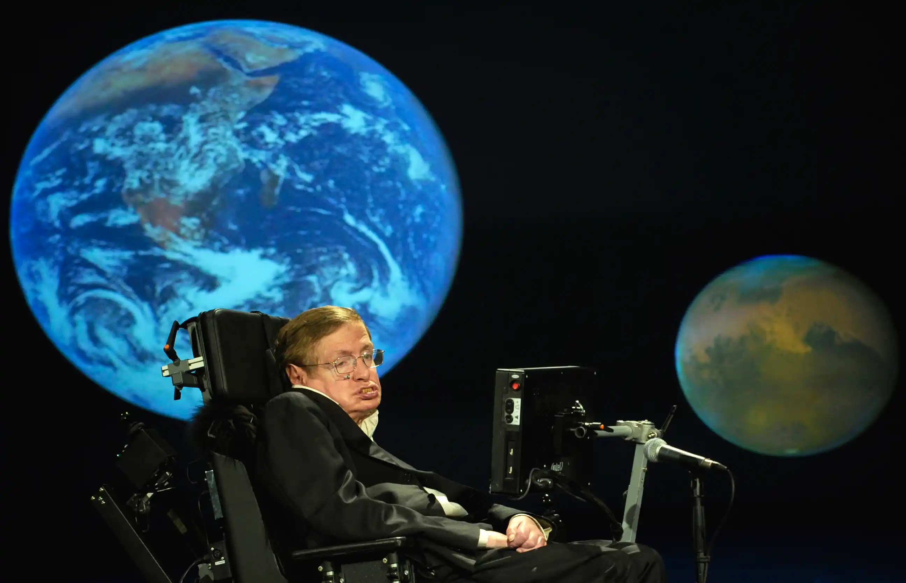

1. Les trous noirs
Stephen Hawking a proposé que ces objets célestes ne soient pas totalement « noirs » et émettent une radiation, connue sous le nom de « radiation de Hawking ».
Cette découverte suggère que les trous noirs peuvent finalement s’évaporer et disparaître, remettant en question l'idée que rien ne peut s'échapper de leur attraction gravitationnelle.

2. La cosmologie et le Big Bang
Hawking a contribué à la théorie du Big Bang, développant des modèles mathématiques qui décrivent l'univers à ses débuts. Il a travaillé sur la manière dont l'univers a évolué depuis cette singularité initiale, aidant à établir un lien entre la relativité générale et la mécanique quantique.
3. L'univers sans bord
Avec son coéquipier James Hartle, Hawking a formulé la proposition de l'univers sans bord. Cette théorie suggère que l'univers n'a pas de limites ni de frontières, se comportant comme une surface sphérique où le temps et l'espace se rejoignent. Cela aide à expliquer l'origine de l'univers dans un cadre sans singularité.
4. La science populaire
Hawking est également connu pour avoir popularisé la science à travers ses livres, notamment "Une brève histoire du temps". Ce livre a rendu des concepts complexes accessibles au grand public, suscitant un intérêt mondial pour l'astrophysique et la cosmologie.
